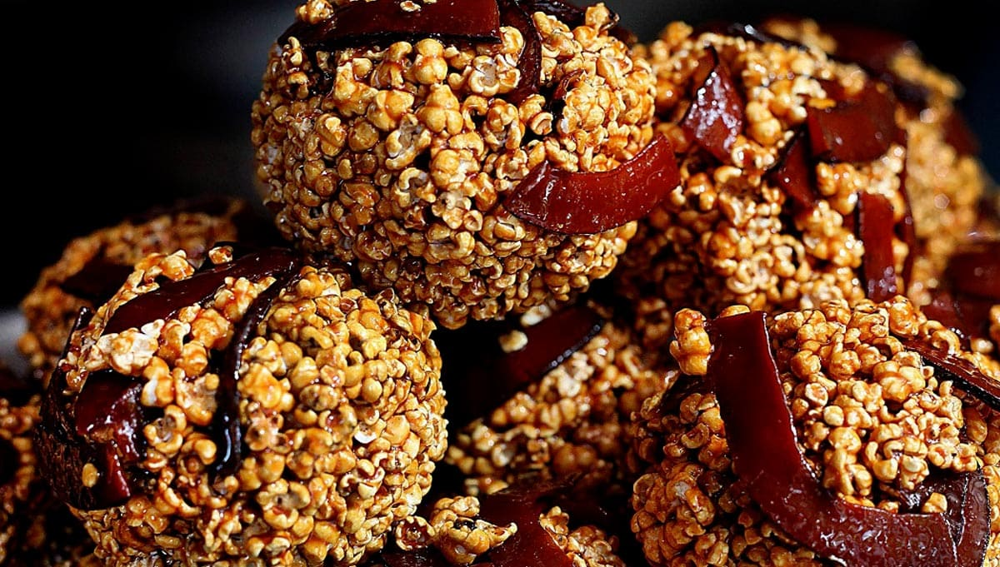
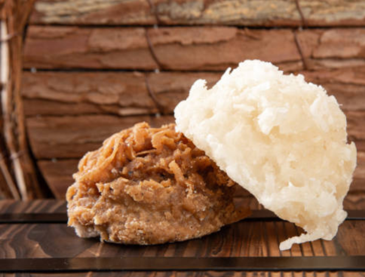
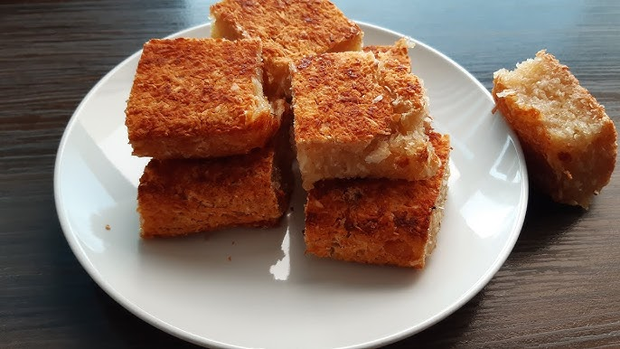
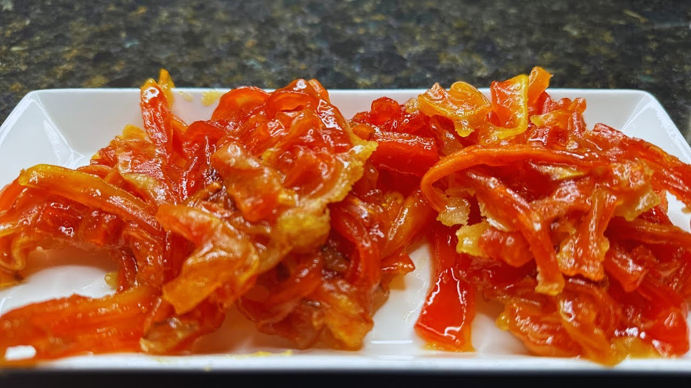
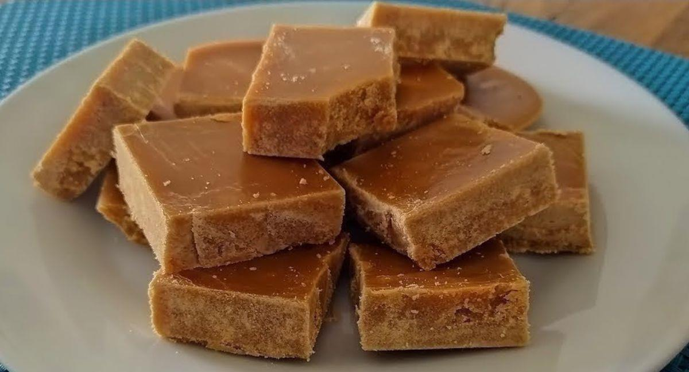
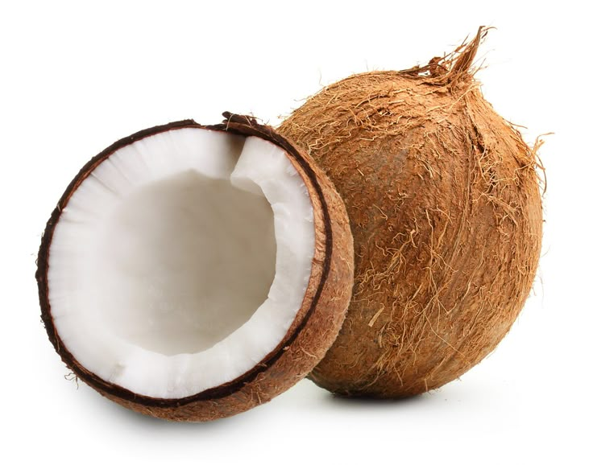
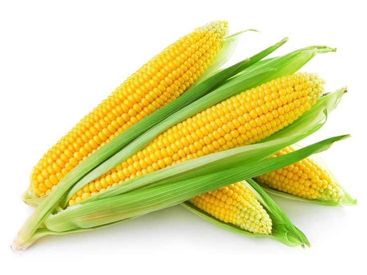
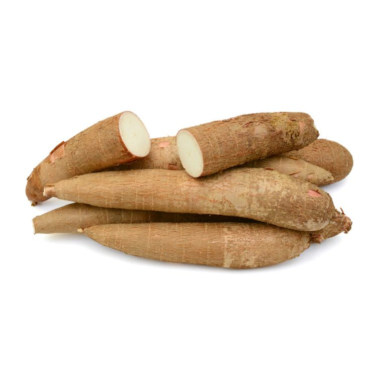
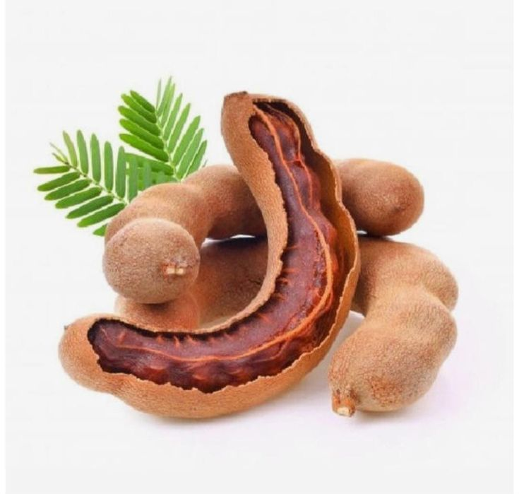

SABORES DE PALENQUE
La gastronomía de San Basilio de Palenque es una herencia viva que fusiona técnicas africanas con ingredientes del Caribe colombiano, destacándose por el uso maestral del coco, el pescado ahumado y las legumbres.


Pescado con Arroz con Coco
Pescado entero sazonado con especias locales y frito hasta alcanzar una piel crujiente y dorada. Servido sobre hoja de plátano, acompañado de arroz con coco ligeramente dulce, tajadas de plátano maduro caramelizadas y ensalada fresca. Un plato que reúne la esencia de la gastronomía palenquera en cada elemento.
Ingredientes Ancestrales
Explora los ingredientes que han sido la base o complemento en la cocina palenquera a lo largo de los años.
ExplorarDulces tradicionales
Explora algunos de los dulces tradicionales de Palenque que han acompañado las fiestas y celebraciones a lo largo de los años.
ExplorarPlatos Típicos
Explora algunos de los platos típicos de Palenque que han acompañado la historia y cultura a lo largo de los años.
ExplorarGALERÍA CULINARIA















Derechos de Autor: Las imágenes de esta sección han sido obtenidas de Pinterest y Google Imágenes con fines netamente ilustrativos y para la preservación cultural del patrimonio palenquero.